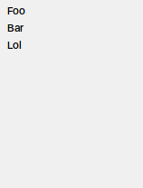

AForEachUI#
Customizable lists display. More...
| Header: | #include <AUI/View/AForEachUI.h> |
| CMake: | aui_link(my_target PUBLIC aui::views) |
Detailed Description#
Used to lazily present possibly large or infinite linear non-hierarchical sequences of data.
Experimental Feature
This API is experimental. Experimental APIs are likely to contain bugs, might be changed or removed in the future.
If you are familiar with RecyclerView/LazyColumn/LazyRow/LazyVStack/LazyHStack, AForEachUI follows the same set of principles; with an exception: AForEachUI does not provide a scrollable area on its own.
AForEachUI is created by using AUI_DECLARATIVE_FOR macro.
AUI_DECLARATIVE_FOR mimics ranged for loop semantically.
static const std::array users = { "Foo", "Bar", "Lol" };
for (const auto& user : users) {
fmt::println("{}", user);
}
static const std::array users = { "Foo", "Bar", "Lol" };
...
setContents(Centered {
AScrollArea::Builder().withContents(
AUI_DECLARATIVE_FOR(user, users, AVerticalLayout) {
return Label { fmt::format("{}", user) };
}
).build() AUI_WITH_STYLE { FixedSize { 150_dp, 200_dp } },
});

AUI_DECLARATIVE_FOR consists of single entry variable name, a potentially reactive expression
evaluating to range, layout name (acceptable are AVerticalLayout and AHorizontalLayout) and a lambda that
creates a new view based on data entry. In terms of C++ syntax, the lambda is partially defined by
AUI_DECLARATIVE_FOR macro; the lambda's body (including curly braces) is left up to developer. The final
declaration of AUI_DECLARATIVE_FOR returns an instance of AForEachUI.
range models one-dimensional list.
AForEachUI works on iterator level by design. In fact, any kind of range (C++20 ranges/range-v3) can be used,
starting from bidirectional containers such as std::vector and std::list, lazy non-owning dummies like
ranges::views::ints and even fancy range views from std::ranges::views or ranges::views are acceptable.
One-directional containers like std::queue or std::stack can't be used because they don't implement begin() and
end(). As such, requirements to a range are dictated by ranges::range concept.
- range has
.begin()method orranges::begin()overload definedauto it = ranges::begin(rng) - range has
.end()method orranges::end()overload definedauto it = ranges::end(rng) - both
begin()andend()return an iterator - iterator has dereference operator
auto& value = *it - iterator has increment operator
++it
Alternatively, these requirements can be described by a ranged for loop: for (const auto& value : rng) { ... }.
The range's type is erased with runtime-based range layer aui::any_view.
AUI_DECLARATIVE_FOR can be nested with no restrictions in both directions.
Examples#
See examples of AUI_DECLARATIVE_FOR.
Lazy Semantics#
AForEachUI presents all data available. If placed somewhere inside AScrollArea (implies AScrollAreaViewport), lazy semantics take place. This means that AForEachUI knows scroll position and sliding window size in pixels, making it possible to present a limited set of data that is actually visible, and present data further as soon as the user scrolls down the scroll area.
Under the hood, AForEachUI stores a pair of iterators of the passed range of presented entries, forming a sliding window subrange. When the user scrolls down the list, both iterators are incremented; when the user scrolls upwards, both iterators are decremented.
In this scenario, AForEachUI adds an extra requirement to range's iterator:
- iterator has decrement operator
--it
If this requirement is not satisfied (case of some ranges::views), AForEachUI would not unload old items,
unless a data update event occurred.
The amount of displayed data is governed by range size, Render to texture tile size, AScrollArea's viewport size and individual entry size. Optimal frequency of sliding during scroll and window size are determined by AForEachUI. In particular, the sliding is performed once per Render to texture tile is passed.
Note
During rendering inside AScrollArea, the renderer clips visible views more precisely; the goal of lazy semantics of AForEachUI is to optimize view instantiation and layout processing overhead, as well as range views' lazy semantics, thanks to iterators.
Scrollbars#
From perspective of layout, lazy semantics is implemented by careful layout updates driven by scroll area events. If possible, the items that appear far from sliding window are unloaded (views are removed). The new items are loaded (new views are instantiated). To avoid content jittering, scroll position is synced with layout updates within AForEachUI. As such, these hijacking operations may confuse scroll bar.
In modern software, especially when it comes to infinite lists in web/mobile applications (i.e., news feed), scrollbar might be completely hidden or significantly transparentized.
This optimization gives a severe performance benefit. Despite the fact that there's a complete mess "under the hood" (scrollbar is the only visual confirmation), the scrolled contents appear normal and natural.
A lie is going on behind the scenes
clang-format off A static range like in the example above will not blow up the machine because AForEachUI is wrapped with a AScrollArea, thus it is not required to evaluate the whole range, which is infinite in our case.
An attempt to update AForEachUI with a large range still can lead to high resource consumption, due to need of recomposition.
Initialization#
This section explains how to initialize AUI_DECLARATIVE_FOR, manage lifetime of containers and how to make them reactive.
In AUI_DECLARATIVE_FOR, a potentially reactive expression evaluating to range and the lambda
that creates a new views are both lambdas with capture default by value [=]. This means that:
- All mentioned local variables are captured by copying.
- All mentioned class member variables (fields) are captured by reference.
Both lambdas can be evaluated at any point during lifetime of a AForEachUI, so the by-value capture makes it's hard to introduce dangling references, by either copying locals or referencing class members.
Most modern compilers are capable to optimize out copying and initialize *copied* locals just in place.
An attempt to go out of the scenarios listed below will likely lead to a static_assert with a link to this section.
Constant global data#
The most straightforward way is using constant global data:
static constexpr auto COLORS = { "Red", "Green", "Blue", "Black", "White" };
class MyWindow: public AWindow {
public:
MyWindow() {
setContents(Vertical {
AUI_DECLARATIVE_FOR(i, COLORS, AVerticalLayout) {
return Label { "{}"_format(i) };
}
});
}
};
AUI_ENTRY {
auto w = _new<MyWindow>();
w->show();
return 0;
}
setContents(Vertical {
AScrollArea::Builder()
.withContents(
AUI_DECLARATIVE_FOR(i, COLORS, AVerticalLayout) {
return Label { "{}"_format(i) };
})
.build() AUI_WITH_STYLE { FixedSize { 150_dp, 200_dp } },
});
Infinite ranges and views#
Most generators, ranges and views are expected to work.
setContents(Vertical {
AScrollArea::Builder().withContents(
AUI_DECLARATIVE_FOR(i, ranges::views::ints, AVerticalLayout) {
return Label { "{}"_format(i) };
}
).build() AUI_WITH_STYLE { FixedSize { 150_dp, 200_dp } },
});

Transferring ownership by copying#
When using locals, their immediate values are copied during initialization of AUI_DECLARATIVE_FOR.
auto items = AVector<AString> { "Hello", "World", "Test" };
setContents(Vertical {
AScrollArea::Builder().withContents(
AUI_DECLARATIVE_FOR(i, items, AVerticalLayout) {
return Label { i };
}
).build() AUI_WITH_STYLE { FixedSize { 150_dp, 200_dp } },
});
items will not reflect on presentation, because it has own copy of items.
Borrowing constant containers#
If your container lives inside your class, its value is not copied but referenced. To avoid unobserved iterator invalidation and content changes, AUI_DECLARATIVE_FOR requires borrowed containers to be constant. There's a compile-time check to verify this requirement that does work in most cases, like this one.
class MyWindow: public AWindow {
public:
MyWindow(AVector<AString> colors): mColors(std::move(colors)) {
setContents(Vertical {
AUI_DECLARATIVE_FOR(i, mColors, AVerticalLayout) {
return Label { "{}"_format(i) };
}
});
}
private:
const AVector<AString> mColors;
};
AUI_ENTRY {
auto w = _new<MyWindow>(AVector<AString>{ "Red", "Green", "Blue", "Black", "White" });
w->show();
return 0;
}
Marking the borrowed container as const effectively saves you from unintended borrowed data changes. If you'd like to change the container or view options and AUI_DECLARATIVE_FOR to respond to the changes, read the section below.
Reactive lists#
The reason why AUI_DECLARATIVE_FOR is so restrictive about using borrowed non-const data is because it stores range's iterators under the hood. Various containers have different rules on iterator invalidation, but, since it accepts any type of range, we consider using its iterators after a modifying access to the container or a view as unsafe:
- visual presentation by AUI_DECLARATIVE_FOR might seem unresponsive to borrowed data changes,
- may lead to program crash.
To address this issue, we provide a convenient way to make iterator invalidation observable:
- wrap the container with
AProperty, - dereference
mColorsin AUI_DECLARATIVE_FOR clause.
class MyWindow: public AWindow {
public:
MyWindow(AVector<AString> colors): mColors(std::move(colors)) {
setContents(Vertical {
_new<AButton>("Add A new color").connect(&AView::clicked, me::addColor),
AScrollArea::Builder().withContents(
AUI_DECLARATIVE_FOR(i, *mColors, AVerticalLayout) {
return Label { "{}"_format(i) };
}
).build() AUI_WITH_STYLE { FixedSize { 150_dp, 200_dp } },
});
}
private:
AProperty<AVector<AString>> mColors;
void addColor() {
mColors.writeScope()->push_back("A new color");
}
};
AUI_ENTRY {
auto w = _new<MyWindow>(AVector<AString>{ "Red", "Green", "Blue", "Black", "White" });
w->show();
return 0;
}
Upon clicking "Add A new color" button, the "A new color" label will appear in the list.
Public Methods#
invalidate#
Notifies that range was changed or iterators might have invalidated.
You do not need to call this manually, AUI_DECLARATIVE_FOR makes all essential connection automatically.